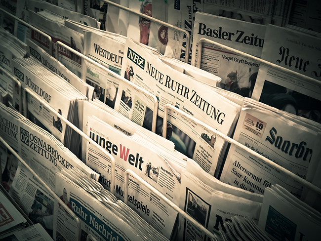
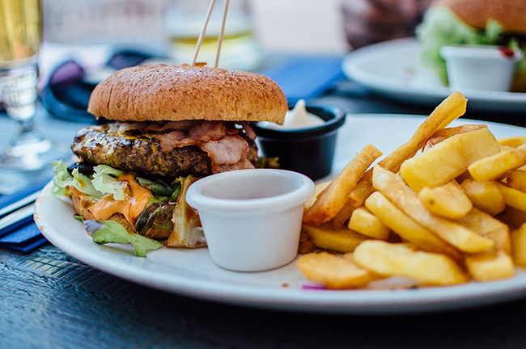

Həyatdan geri qaldığını göstərən 8 əlamət
Öz üzərində işləmək istəyənlər üçün sadə və praktik üsullar hazırlanıb. Bu üsullar tez mənimsənilir və dərhal nəticə verir.
Çoxlarımız tez-tez köhnəlmiş stereotiplərdən istifadə edir və köhnə vərdişlərdən, həyat baxışlarından imtina etmək istəmirik.
Əgər bu siyahıdakı maddələr sənə uyğundursa, məyus olma. İstəsən, həyatda hər zaman nəyisə dəyişmək mümkündür.
1.Sən ingilis dilini bilmirsen
Hər hansı bir xarici dilin, xüsusilə ingilis dilinin biliyi insan üçün böyük imkanlar açır. Əvvəlcə dünyagörüşünü genişləndirirsən, həmçinin səyahət və ya iş səfəri zamanı asanlıqla ünsiyyət qura və istiqamət tapa bilirsən. İngilis dili həm də istənilən müasir məişət texnikasının təlimatını rahat başa düşməyə kömək edir. Xarici internet mağazalarından alış-verişi çətinlik çəkmədən edə bilərsən. Xarici dili öyrənərək işin üçün lazım olan hər hansı bir xarici ədəbiyyatı da oxuma imkanın yaranır.
İngilis dilini bilmirsənsə, həmkarların və dostların qarşısında xeyli geri qalacaqsan.
2.Sən maliyyənə nəzarət etmirsen
Çox insanlar pulla bağlı filosofik yanaşır: “Bu gün varsa – yaxşıdır, sabah baxarıq!”. Lakin unutmamalıyıq ki, məhz pulun mövcudluğu insanın təhlükəsiz hiss etməsinə və sabaha inamlı olmasına kömək edir. Buna görə də maliyyə savadı maddi rifahının əsas təminatıdır. Fırıldaqçıların maliyyə sxemlərini nəzəri olaraq öyrənmək çox vacibdir ki, praktikada onlardan qaça biləsən. Əgər vergi sistemi işini başa düşmək istəmirsənsə, vergi orqanları ilə bir çox problemlər yarana bilər.
Buna görə də pulunu artırmaq və qorumaq üçün maliyyə sisteminin mürəkkəb mexanizmlərini dəqiq başa düşmək vacibdir.
3.Sən yeni texnologiyalardan istifadə etmirsən
Bir şeydir ki, qabaqcıl elm və texnikanın bütün nailiyyətlərini öyrənmisən və yenə də kağız kitabı elektron variantdan üstün tutursan. Tamamilə başqa şeydir ki, yeni inkişafları öyrənmək və başa düşmək istəmirsən. Ən müasir cihazları almaq lazım deyil. Lakin əgər daima kommunal ödənişlər üçün növbədə durursansa və bunu internet vasitəsilə etmirsənsə, deməli, həyatda nəsə düzgün getmir.
Baxışlarını yenidən gözdən keçir və həyatını asanlaşdırmağa çalış.
4.Sən xəbərlərdə deyildiyi hər şeyə inanırsan
Peşəkar jurnalist məlumatı yayımlamadan əvvəl onu diqqətlə yoxlayır. Oxucu da eyni şeyi etməlidir. Hər hansı məlumatın düzgünlüyünə əmin olmaq üçün onu diqqətlə öyrənmək lazımdır. Ən yaxşısı, bir neçə mənbə və media baxış bucağı ilə tanış olmaqdır. Beynəlxalq hadisələri obyektiv qiymətləndirmək üçün xarici nəşrləri də oxumaq məsləhətdir.
Əgər yalnız xoşuna gələn xəbərləri izləməyə üstünlük verirsənsə, bu istənməyən nəticələrə səbəb ola bilər. Maraqlı məlumatları qaçıra bilərsən və ya baş verən hadisələri düzgün başa düşməyə bilərsən.
5. Sən ünsiyyət dairəni genişləndirmirsən
Məlumdur ki, dost tapmaq üçün ən yaxşı vaxt məktəb və universitet illəridir. Yaş artdıqca tanışların dairəsi adətən daralır. Çoxları “Köhnə dost iki yeni dostdan yaxşıdır” deyən atalar sözünə əməl edir. Lakin yeni tanışlıqlar – yeni biliklər, imkanlar və perspektivlərdir. Yaş artdıqca maraq dairəsinə uyğun dostlar tapmaq zərurəti yaranır. Onlarla ünsiyyət qurmaq, boş vaxtı birlikdə keçirmək və yeni təcrübə paylaşmaq vacibdir.
Yalnız köhnə dostlarla ünsiyyət qurmaq həyatda maraqlı məlumatların axınını azaldır.
6. Sən sağlam həyat tərzinə əməl etmirsən
Bugünkü dövrdə sağlam həyat tərzi yalnız Instagram-da meyvə və tərəvəzli smuzilərin şəkilləri ilə məhdudlaşmır. Faydalı qida, aktiv həyat tərzi, idman məşqləri və həkimə müntəzəm müraciət sağlamlığının yaxşılaşmasına və həyat ritminin qorunmasına kömək edir.
Çünki müxtəlif xəstəliklər yalnız həyat keyfiyyətinə təsir etmir, həm də səni tamamilə fəaliyyət qabiliyyətindən məhrum edə bilər.
7. Sən keçmişdə yaşayırsan
Əgər daima “Nə gözəl vaxtlar idi, indiki kimi deyil!” deyərək keçmişi xatırlayırsansa, bir ayağın hələ orada dayanır. Burada və indi xoşbəxt olmağa çalış.
Bu yalnız bir sənət deyil, həm də işdir; bunun üçün keçmişi idealizə etməyi buraxmaq və indiki vaxtda yaşamaq lazımdır.
8. Sən başqalarının fikrinə asılısan
Əgər həyatı kökündən dəyişmək istəyirsənsə, bunu etməlisən. Öz ağlınla yaşa, ailə və dostların fikrinə asılı olma. Qanun yalnız həyatın müəyyən aspektlərini tənzimləyir. Qalan bütün hallarda istədiyin kimi hərəkət edə bilərsən.
Əlbəttə, məsuliyyət böyük olacaq. Lakin həyat məqsədinə çatmaq və lazım olan nəticələri əldə etmək üçün risk etməli və başqalarının fikrinin səni təsir etməməli olduğunu anlamalısan.